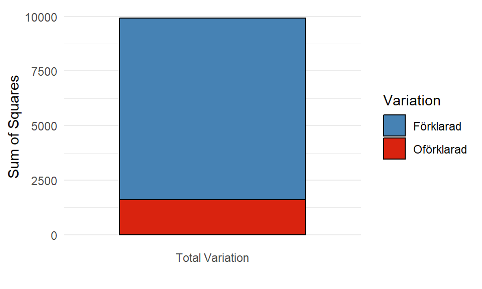

5 Statistisk inferens
När vi anser oss ha hittat en lämplig modell kan vi fokusera på att tolka modellens resultat avseende populationen. Inom regressionsmodellering kan vi genomföra flera olika typer av statistisk inferens; på hela modellen, på grupper av parametrar, eller på enskilda parametrar.
Vi kan börja med ett F-test för hela modellen för att se ifall minst en parameter är signifikant, att modellen är värd att undersöka vidare, för att sedan genomföra enskilda t-test för respektive parameter och bedöma vilka förklarande variabler har en signifikant påverkan på responsvariabeln. Då kvalitativa variabler ofta består utav flera parametrar behöver dessa slås samman för att undersöka variabelns samband vilket vi kan göra med ett partiellt F-test.
Innan vi går in på de olika testerna behöver vi presentera ANOVA-tabellen som används för att dela upp responsvariabelns variation i modellens olika komponenter; modellens förklarande variabler och feltermen.
5.1 ANOVA
Analysis of Variance är en samling metoder som beräknar variationen av olika modellkomponenter. Målet med en modell är att förklara den totala variationen i responsvariabeln på bästa sätt. Allting som de förklarande variablerna hjälper till att beskriva kallas för den förklarade variationen och det som modellen inte lyckas förklara (felet) är den oförklarade variationen.
\[ \underbrace{\mathbf{Y}}_\text{total variation} = \underbrace{\mathbf{X} \boldsymbol{\beta}}_\text{förklarad variation} + \underbrace{\mathbf{E}}_\text{oförklarad variation} \tag{5.1}\]
Ekvation 5.1 visar att den totala variationen är en summa av den förklarade och oförklarade variationen vilket också ses i formlerna för dessa. Respektive komponent beräknas enligt:
\[ \text{total variation} = SST = \mathbf{Y}'\mathbf{Y} - \left(\frac{1}{n}\right)\mathbf{Y}'\mathbf{J}\mathbf{Y} \] där \(\mathbf{J}\) är enhetsmatrisen, en \(n \times n\) matris endast innehållande 1:or.
Det kanske inte är så lätt att se vad dessa matrisberäkningar faktiskt beskriver men beräkningen motsvarar \(\sum_{i=1}^n(Y_i - \bar{Y})^2\), alltså täljaren i en variansberäkning för \(Y\). Den vänstra termen (\(\mathbf{Y}'\mathbf{Y}\)) motsvarar \(Y_i\) och den högra termen (\(\left(\frac{1}{n}\right)\mathbf{Y}'\mathbf{J}\mathbf{Y}\)) motsvarar \(\bar{Y}\), responsvariabelns medelvärde. Den totala variationen beskriver hur mycket variation som uppkommer ifall vi skulle använda medelvärdet av \(Y\) som modell.
\[ \text{oförklarad variation} = SSE = \mathbf{Y}'\mathbf{Y} - \boldsymbol{\hat{\beta}}'\mathbf{X}'\mathbf{Y} \] SSE har vi tidigare använt som ett mått på felet i modellen, se Ekvation 3.4, vilket betyder att \(\boldsymbol{\hat{\beta}}'\mathbf{X}'\mathbf{Y}\) motsvarar \(\hat{Y}_i\).
\[ \text{förklarad variation} = SSR = \boldsymbol{\hat{\beta}}'\mathbf{X}'\mathbf{Y} - \left(\frac{1}{n}\right)\mathbf{Y}'\mathbf{J}\mathbf{Y} \]
SSR beskriver variationen mellan modellens anpassade värde och medelvärdet av \(Y\). Det kan i sin tur kan tolkas som hur mycket mer variation som modellen bidrar med jämfört med medelvärdet, eller kort sagt hur mycket bättre modellen är på att förklara variationen i \(Y\).
Vi har tidigare använt en annan matrisformel för SSE men med hjälp av omformuleringen kan vi tydligt se hur SST = SSR + SSE: \[ \mathbf{Y}'\mathbf{Y} - \left(\frac{1}{n}\right)\mathbf{Y}'\mathbf{J}\mathbf{Y} = \mathbf{Y}'\mathbf{Y} \underbrace{- \boldsymbol{\hat{\beta}}'\mathbf{X}'\mathbf{Y} + \boldsymbol{\hat{\beta}}'\mathbf{X}'\mathbf{Y}}_\text{summerar till 0} - \left(\frac{1}{n}\right)\mathbf{Y}'\mathbf{J}\mathbf{Y} \] Vi kan också visualisera denna relation i ett stackat stapeldiagram. Den totala höjden av stapeln är SST medan de olika delarna beskriver hur stor del av den totala variationen som är förklarad eller oförklarad i en viss modell.
5.1.1 ANOVA-tabellen
En ANOVA-tabell är ett sätt att effektivt få en översikt av dessa olika komponenter samt visa ytterligare information, såsom frihetsgraderna (\(df\)) för respektive komponent och medelkvadratsummor.
Frihetsgrader beskriver hur många lutningsparametrar som skattas för respektive del1 och medelkvadratsummor visar den genomsnittliga variationen per frihetsgrad, \(\frac{SS}{df}\).
| Source | DF | Sum of Squares | Mean Square |
|---|---|---|---|
| Model (Regression) | \(df_R = k\) | \(SSR = \boldsymbol{\hat{\beta}}' \mathbf{X}' \mathbf{Y} - \frac{1}{n} \mathbf{Y}' \mathbf{J} \mathbf{Y}\) | \(MSR = \frac{SSR}{df_R}\) |
| Error | \(df_E = n - (k + 1)\) | \(SSE = \mathbf{Y}' \mathbf{Y} - \boldsymbol{\hat{\beta}}' \mathbf{X}' \mathbf{Y}\) | \(MSE = \frac{SSE}{df_E}\) |
| Total | \(df_T = n - 1\) | \(SSY = \mathbf{Y}' \mathbf{Y} - \frac{1}{n} \mathbf{Y}' \mathbf{J} \mathbf{Y}\) |
En enkel ANOVA-tabell som Tabell 5.1 visar endast de tre huvudsakliga komponenterna, men olika programvaror kan ibland visa andra uppdelningar som standard. I en multipel linjär regressionsmodell är det vanligt att dela upp den förklarade variationen ytterligare, exempelvis i sekventiella kvadratsummor.
5.1.2 Sekventiella kvadratsummor
Beräkningarna för en ANOVA-tabell sker automatiskt i R när vi använder lm() och vi kan plocka ut tabellen från modellobjektet med hjälp av anova(), (se Tip 3.1).
Visa kod
anova(simpleModel) %>%
round(4) %>%
kable() %>%
kable_styling("striped")| Df | Sum Sq | Mean Sq | F value | Pr(>F) | |
|---|---|---|---|---|---|
| species | 2 | 7015.3857 | 3507.6929 | 713.4929 | 0 |
| bill_depth_mm | 1 | 818.5050 | 818.5050 | 166.4905 | 0 |
| flipper_length_mm | 1 | 198.2269 | 198.2269 | 40.3210 | 0 |
| body_mass_g | 1 | 160.3760 | 160.3760 | 32.6218 | 0 |
| sex | 1 | 133.7191 | 133.7191 | 27.1995 | 0 |
| Residuals | 326 | 1602.6899 | 4.9162 |
Som standard, delar R upp modellens kvadratsumma (SSR) i de enskilda förklarande variablerna med hjälp av sekventiella (även kallad betingade) kvadratsummor. En sekventiell kvadratsumma beskriver hur mycket variation en förklarande variabel bidrar med givet att modellen redan innehåller andra förklarande variabler.
Ordningen som presenteras i Tabell 5.2 är ordningen som variablerna läggs till i modellen, till exempel visar andra raden \(SS(\text{bill\_depth\_mm} | \text{species})\), att näbbredden bidrar med 818.505 ytterligare unik förklarad variation av responsvariabeln som art inte redan har förklarat. Den tredje raden visar \(SS(\text{flipper\_length\_mm} | \text{species}, \text{bill\_depth\_mm})\), det vill säga hur mycket ytterligare unik variation som fenlängden förklarar i en modell som inkluderar näbbredd och art.
Rent matematiskt beräknas den sekventiella kvadratsumman som en summa av antingen SSE eller SSR mellan två olika modeller, en utan den tillagda variabeln och en med variabeln inkluderad. Anta att vi vill lägga till variabel \(X^*\) till en modell som har \(k\) andra variabler, då ser beräkningen ut som följer:
\[ \begin{aligned} SS(X^*|X_1, \ldots, X_k) &= SSE_{X_1, \ldots, X_k} - SSE_{X_1, \ldots, X_k, X^*} = \\ &= SSR_{X_1, \ldots, X_k, X^*} - SSR_{X_1, \ldots, X_k} \end{aligned} \tag{5.2}\]
Notera att SSR ökar för varje ytterligare variabel som läggs till i modellen, medan SSE alltid minskar. En variation måste alltid vara positiv, därav beräknas \(SSE_{reducerad} - SSE_{komplett}\) eller \(SSR_{komplett} - SSR_{reducerad}\).
Sekventiella kvadratsummor påverkas av ordningen variablerna läggs till i modellen. Låt oss byta ordning på de förklarande variablerna när vi anpassar modellen:
Visa kod
model <- lm(formula = bill_length_mm ~ sex + ., data = modelData)
anova(model) %>%
round(4) %>%
kable() %>%
kable_styling("striped")| Df | Sum Sq | Mean Sq | F value | Pr(>F) | |
|---|---|---|---|---|---|
| sex | 1 | 1175.4780 | 1175.4780 | 239.1017 | 0.0000 |
| species | 2 | 6975.5916 | 3487.7958 | 709.4457 | 0.0000 |
| bill_depth_mm | 1 | 64.4987 | 64.4987 | 13.1196 | 0.0003 |
| flipper_length_mm | 1 | 78.3815 | 78.3815 | 15.9434 | 0.0001 |
| body_mass_g | 1 | 32.2629 | 32.2629 | 6.5625 | 0.0109 |
| Residuals | 326 | 1602.6899 | 4.9162 |
I Tabell 5.3 ser vi att \(SS(\text{sex}) = 1175.478\) vilket är betydligt högre än \(SS(\text{sex}|\text{species}, \text{bill\_depth\_mm}, \text{flipper\_length\_mm}, \text{body\_mass\_g}) = 133.7191\) från Tabell 5.2. Variabeln kön bidrar med mycket variation när den är ensam i en modell, men när den läggs till i en modell som redan har andra variabler bidrar den inte med lika mycket unik information. Detta betyder att den förklarade variationen som variabeln bidrar med verkar finnas i övriga variabler också. Denna iakttagelse kommer vi komma tillbaka till i ett senare kapitel.
Någonting som är lika i de två tabellerna är SSE. Vi har i båda modellerna inkluderad samma variabler vilket innebör att SST, SSR, och SSE överlag är densamma. Summan av alla sekventiella kvadratsummor ska fortfarande bli SSR oavsett ordningen på variablerna och på grund av den additiva egenskapen hos variationen har SST och SSE inte heller förändrats.
5.2 Statistisk inferens
Med hjälp av de olika källorna av variation kan vi beräkna tester för hela eller delar av modellen i olika F-test, medan de enskilda parameterskattningarna och dess tillhörande medelfel kan användas i tester för enskilda lutningsparametrar.
5.2.1 F-test för modellen
I en multipel linjär regression är ett F-test för hela modellen bra att börja med för att se ifall minst en lutningsparameter är signifikant. Vi undersöker hypoteserna:
\[\begin{align*} H_0&: \beta_1 = \beta_2 = \beta_3 = \cdots = \beta_k = 0\\ H_a&: \text{Minst en av } \beta_j \text{ i } H_0 \text{ är skild från } 0 \end{align*}\]
Om minst en lutningsparameter är signifikant betyder det att det finns åtminstone en variabel som bidrar med förklarad variation, att modellen är bättre än att använda enbart \(\bar{Y}\). Testvariabeln undersöker relationen mellan den förklarande och oförklarande variationen genom dess medelkvadratsummor.
\[ F_{test} = \frac{SSR / k}{SSE / (n - (k+1))} = \frac{MSR}{MSE} \]
Testvariabeln följer en F-fördelning som styrs av två frihetsgrader; \(df1\) från täljaren och \(df2\) från nämnaren i beräkningen, det vill säga modellens och felets frihetsgrader. Om \(H_0\) är sann kommer testvariabeln bli 0, medan om \(H_a\) är sann kommer testvariabeln bli ett stort positivt tal. Eftersom båda medelkvadratsummorna är positiva tal innebär det att kvoten alltid kommer vara positiv och vi kan förkasta \(H_0\) om testvariabeln befinner sig nog långt från 0.
Visa kod
# Skapar en funktion för att generera olika F-fördelningar
generateFdistribution <- function(df1, df2, n = 1000) {
x <- seq(0, 5, length.out = n)
y <- df(x, df1, df2)
tibble(x = x, y = y, df1 = df1, df2 = df2)
}
# Skapar en lista med olika frihetsgrader
dfs <- list(c(5, 30), c(10, 100), c(20, 50), c(30, 300))
# Genererar data
Fdistributions <- dfs %>%
purrr::map_df(~generateFdistribution(.x[1], .x[2]), .id = "Distribution") %>%
mutate(Distribution = paste0("df1 = ", df1, ", df2 = ", df2))
# Plot the F-distributions using ggplot2
ggplot(Fdistributions) +
aes(x = x, y = y, color = Distribution) +
geom_line(linewidth = 1) +
labs(
x = "F-värde",
y = "Densitet",
color = "Frihetsgrader"
) +
theme_minimal() +
theme(
plot.title = element_text(hjust = 0.5, size = 14, face = "bold"),
legend.position = "right",
legend.title = element_text(face = "bold")
) +
scale_color_manual(values = c("steelblue", "#d9230f", "black", "grey50"))
För att få fram SSR från en ANOVA-tabell i R behöver vi summera de sekventiella kvadratsummorna. Vi kan sedan bearbeta tabellen för att få fram testvariabeln och använda frihetsgraderna för respektive källa i pf(lower.tail = FALSE) för att få fram p-värdet för testet.
Visa kod
anovaTable <- anova(simpleModel)
# Beräknar raden för SSR utifrån alla rader förutom SSE
SSR <- anovaTable[-nrow(anovaTable),] %>%
summarize(across(Df:`Sum Sq`, ~sum(.x))) %>%
mutate(`Mean Sq` = `Sum Sq` / Df,
`F value` = NA,
`Pr(>F)` = NA)
# Kombinerar SSR med SSE från ursprungliga tabellen
simpleAnova <- SSR %>%
add_row(anovaTable[nrow(anovaTable),]) %>%
mutate(
`F value` =
ifelse(row_number() == 1,
`Mean Sq`[1] / `Mean Sq`[2],
NA),
`Pr(>F)` =
ifelse(row_number() == 1,
pf(q = `F value`[1], df1 = Df[1], df2 = Df[2], lower.tail = FALSE),
NA)
)
rownames(simpleAnova) <- c("Model", "Residuals")
kable(simpleAnova, digits = 4) %>%
kable_styling("striped")| Df | Sum Sq | Mean Sq | F value | Pr(>F) | |
|---|---|---|---|---|---|
| Model | 6 | 8326.213 | 1387.7021 | 282.2698 | 0 |
| Residuals | 326 | 1602.690 | 4.9162 |
Eftersom p-värdet är mindre än 5 procent, kan \(H_0\) förkastas och minst en av variablerna har ett samband med responsvariabeln.2
5.2.2 Partiella F-test för grupper av parametrar
Ibland är vi intresserade att undersöka delar av modellen, en grupp med lutningsparametrar. Ett sådant fall är om vi vill undersöka en kvalitativ variabels påverkan eftersom den kan ha transformerats till flera indikatorvariabler alla med en tillhörande lutningsparameter. Ett annat tillfälle är om vi vill undersöka om flera variabler tillsammans bidrar med förklarad variation till modellen.
Istället för att undersöka alla lutningsparametrar undersöks nu ett urval: \[\begin{align*} H_0&: \beta_1 = \beta_2 = \beta_3 = \cdots = \beta_s = 0\\ H_a&: \text{Minst en av } \beta_j \text{ i } H_0 \text{ är skild från } 0 \end{align*}\] där \(s\) är antalet parametrar som undersöks.
Testvariabeln för ett partiellt F-test kräver en komplett (betecknad \(_F\)) och en reducerad modell (betecknad \(_R\)). Den kompletta modellen består av alla variabler medan den reducerade modellen utgår från att \(H_0\) är sann och variablerna som undersöks har plockats bort från anpassningen. Vi kan välja att antingen använda SSR eller SSE för att beräkna hur mycket förklarad variation som försvinner mellan de två modellerna enligt samma princip som Ekvation 5.2.
\[ F_{test} = \frac{(SSR_F - SSR_R) / s}{SSE_F / (n - (k+1))} = \frac{(SSE_R - SSE_F) / s}{SSE_F / (n - (k+1))} \tag{5.3}\]
Testvariabeln är fortfarande F-fördelat med \(s\) respektive \(n - (k+1)\) frihetsgrader.
5.2.2.1 Räkneknep för partiella F-test
Med hjälp av Ekvation 5.2 kan Ekvation 5.3 formuleras på ett tredje sätt som underlättar vår analysprocess. Vi kan skriva om skillnaden i förklarad variation mellan den kompletta och reducerade modellen som en sekventiell kvadratsumma. Exempelvis kan vi vilja undersöka om variabeln art har ett samband med responsvariabeln. Eftersom den variabeln transformeras till två indikatorvariabler omfattar hypoteserna två lutningsparametrar.
\[\begin{align*} H_0&: \beta_{Chinstrap} = \beta_{Gentoo} = 0\\ H_a&: \text{Minst en av } \beta_j \text{ i } H_0 \text{ är skild från } 0 \end{align*}\]
Den reducerade modellen skapas utifrån att \(H_0\) är sann, det vill säga \(\beta_{Chinstrap} = \beta_{Gentoo} = 0\) och de två modellernas förklarade variation skulle betecknas som: \[ \begin{aligned} SSR_{R} &= SSR_{bill\_depth\_mm, flipper\_length\_mm, body\_mass\_g, sex} \\ SSR_{F} &= SSR_{bill\_depth\_mm, flipper\_length\_mm, body\_mass\_g, sex, species} \end{aligned} \]
Vi kan omformulera täljaren i Ekvation 5.3 till: \[ SS(species|bill\_depth\_mm, flipper\_length\_mm, body\_mass\_g, sex) \] I de ANOVA-tabeller som presenterats tidigare kan vi få fram denna kvadratsumma direkt om art läggs till som den sista variabeln i modellen.
Visa kod
model <- lm(bill_length_mm ~ bill_depth_mm + flipper_length_mm + body_mass_g + sex + species, data = modelData)
anova(model) %>%
round(4) %>%
kable() %>%
kable_styling("striped")| Df | Sum Sq | Mean Sq | F value | Pr(>F) | |
|---|---|---|---|---|---|
| bill_depth_mm | 1 | 518.9806 | 518.9806 | 105.5648 | 0.0000 |
| flipper_length_mm | 1 | 4045.7248 | 4045.7248 | 822.9329 | 0.0000 |
| body_mass_g | 1 | 6.1329 | 6.1329 | 1.2475 | 0.2649 |
| sex | 1 | 68.4245 | 68.4245 | 13.9181 | 0.0002 |
| species | 2 | 3686.9500 | 1843.4750 | 374.9776 | 0.0000 |
| Residuals | 326 | 1602.6899 | 4.9162 |
En ANOVA-tabell med sekventiella kvadratsummor beräknar ett partiellt F-test för respektive variabel (och dess parameter/parametrar) som undersöker huruvida variabeln bidrar med en signifikant ökning av den förklarade variationen till en modell som redan inkluderar variablerna ovanför. Tabell 5.5 beräknar nu det partiella F-test för art (\(F_{test} = 374.9776\)) som vi var intresserade av och vi kan direkt tolka p-värdet för testet (\(p-värde < 0.001\)) som att minst en av lutningsparametrarna är signifikant skild från 0.
Om vi genomför ett partiellt F-test för flera variabler kan vi inte använda p-värden som anges i tabellen då hypoteserna omfattar fler lutningsparametrar/variabler än vad de sekventiella kvadratsummorna visar. Anta att vi vill undersöka om art och kön tillsammans bidrar något till modellen. Hypotesprövningen skulle då omfatta:
\[ \begin{aligned} H_0&: \beta_{sexMale} = \beta_{Chinstrap} = \beta_{Gentoo} = 0\\ H_a&: \text{Minst en av } \beta_j \text{ i } H_0 \text{ är skild från } 0 \end{aligned} \]
Den sekventiella kvadratsumman som vi vill använda anges som \(SS(species, sex|bill\_depth\_mm, flipper\_length\_mm, body\_mass\_g)\) och vi kan beräkna fram detta värde genom att summera de två variablernas SS från Tabell 5.5.
\[ \begin{aligned} SS(species, sex|bill\_depth\_mm, flipper\_length\_mm, body\_mass\_g) = \\ SS(species|bill\_depth\_mm, flipper\_length\_mm, body\_mass\_g, sex) + \\ SS(sex|bill\_depth\_mm, flipper\_length\_mm, body\_mass\_g) \end{aligned} \] Alternativet är att anpassa två modeller i R, den kompletta och reducerade och läsa av SSE eller summera SSR från respektive ANOVA-tabell.
5.2.2.2 Partiellt F-test för specifika värden
Vi kan ställa upp en generell modell som: \[\begin{align*} Y = \beta_0 + \beta_1 \cdot X_1 + \beta_2 \cdot X_2 + \beta_3 \cdot X_3 +\beta_4 \cdot X_4 +\beta_5 \cdot X_5+ E \end{align*}\]
Om vi ska undersöka specifika parametrars värden (som inte är 0) kan vi genomföra följande härledning. Anta \(H_0:\) \(\beta_2=4\) och \(\beta_5 = -2\) som ska undersökas med ett test.
\[\begin{align*} Y &= \beta_0 + \beta_1 \cdot X_1 + 4 \cdot X_2 + \beta_3 \cdot X_3 +\beta_4 \cdot X_4 - 2 \cdot X_5+ E\\ Y - 4 \cdot X_2 + 2 \cdot X_5 &= \beta_0 + \beta_1 \cdot X_1 + \beta_3 \cdot X_3 +\beta_4 \cdot X_4 + E \\ Y^* &= \beta_0 + \beta_1 \cdot X_1 + \beta_3 \cdot X_3 +\beta_4 \cdot X_4 + E \end{align*}\]
\(Y^*\) kan anses vara en reducerad modell för ett F-test. I R kan detta inte lösas genom anova() utan måste beräknas ‘’för hand’’ genom att anpassa två modeller, den kompletta och den reducerade.
5.2.3 t-test för enskilda parametrar
Att använda ANOVA-tabellen för att undersöka enskilda parametrar är inte lämpligt då det kräver att variabeln anges sist i modelleringen för att det partiella F-testet undersöker just den enskilda variabeln i relation till övriga modellen. Istället bör vi använda t-test för respektive parameter.
Formellt undersöks hypoteserna: \[ \begin{aligned} H_0&: \beta_j = 0\\ H_a&: \beta_j \ne 0 \end{aligned} \] där \(j\) är någon av lutningsparametrarna i en anpassad modell.
Testvariabeln beräknas utifrån den skattade lutningsparametern och dess medelfel: \[ \begin{aligned} t_{test} = \frac{b_j - 0}{s_{b_j}} \end{aligned} \]
Testvariabeln är t-fördelad givet \(H_0\) med \(n-(k+1)\) frihetsgrader.
I R används t-test i koefficienttabellen som vi kan plocka ut ur summary()-objektet genom coef().
Visa kod
summary(simpleModel) %>%
coef() %>%
round(4) %>%
kable(format = "markdown",
col.names = c("Variabel", "Skattning", "Medelfel", "t-värde", "p-värde"),
parse = TRUE) %>%
kable_styling("striped")| Variabel | Skattning | Medelfel | t-värde | p-värde |
|---|---|---|---|---|
| (Intercept) | 15.0166 | 4.3742 | 3.4330 | 0.0007 |
| speciesChinstrap | 9.5655 | 0.3497 | 27.3508 | 0.0000 |
| speciesGentoo | 6.4044 | 1.0304 | 6.2154 | 0.0000 |
| bill_depth_mm | 0.3130 | 0.1541 | 2.0316 | 0.0430 |
| flipper_length_mm | 0.0686 | 0.0232 | 2.9608 | 0.0033 |
| body_mass_g | 0.0011 | 0.0004 | 2.5617 | 0.0109 |
| sexmale | 2.0297 | 0.3892 | 5.2153 | 0.0000 |
I Tabell 5.6 ser vi att p-värdet för alla t-testen är väldigt låga (nära 0). För varje enskilda hypotesprövning kan vi på fem procents signifikans förkasta \(H_0\) vilket betyder att variabeln har en signifikant påverkan på responsvariabeln.
Viktigt
Om en parameter inte anses signifikant är det en motivering till att variabeln kan plockas bort, vi anpassar en reducerad modell och en ny analys påbörjas. Om en variabel plockas bort kommer de övriga parameterskattningarna förändras och tolkningar samt inferens behöver uppdateras.
5.2.4 Konfidensintervall för \(\beta\)
Slutsatsen vi kan dra från dessa hypotesprövningar är att modellen innehåller variabler som alla har ett signifikant samband med responsvariabeln. Om vi vill tolka magnituden av effekten gentemot populationen, inte bara om sambandet är signifikant, behöver vi beräkna intervallskattningar.
\[ \begin{aligned} b_j \pm t_{n - (k+1); 1- \alpha/2} \cdot s_{b_j} \end{aligned} \]
5.3 Enkla utvärderingsmått
Bara för att en modell är lämplig, uppfyller modellantaganden och innehåller signifikanta parametrar, betyder det inte att modellen är den bästa som kan skapas eller överhuvudtaget bra. Med hjälp av olika utvärderingsmått kan vi få en överblick på hur bra modellen är.
Förklaringsgraden (\(R^2\)) beskriver hur stor andel av den totala variationen som förklaras av modellens förklarande variabler. Med denna beskrivning kan vi beräkna \(R^2\) som: \[ \begin{aligned} R^2 = \frac{SSR}{SST} = 1 - \frac{SSE}{SST} \end{aligned} \] På grund av att SSR alltid blir större ju fler variabler som en modell innehåller, behöver vi justera måttet för att kunna jämföra modeller av olika storlekar. Istället bör vi titta på den justerade förklaringsgraden (\(R^2_{a}\)) för att se vilken modell som är bäst. En förbättrad \(R^2_{a}\) betyder att modellen har tagit bort onödig komplexitet.
\[ \begin{aligned} R^2_a = 1 - \frac{SSE / (n - (k+1))}{SST / (n - 1)} \end{aligned} \]
5.4 Prediktioner
Prediktioner innebär att vi skattar värdet på Y givet observerade värden på X med hjälp av den anpassade regressionslinjen. Dessa prediktioner kommer falla längsmed linjen vilket ytterligare motiverar att modellen behöver vara lämplig och bra. Vi vill inte att en prediktion i ett område är mer träffsäker än en prediktion i en annan eller att regressionslinjen generellt är en dålig representation av responsvariabeln.
Modellen utgår från en specifik definitionsmängd, de observerade värdena på \(\mathbf{X}\), och det är även inom denna mängd som prediktioner bör göras. Det finns vissa tillfällen, till exempel inom tidsserieanalys, där prediktioner görs utanför definitionsmängden men där finns ett beroende i tiden som möjliggör dessa extrapoleringar. Inom “vanlig” regression bör vi undvika att extrapolera regressionslinjen utanför definitionsmängden.
5.4.1 Medelvärdet av Y för givna \(\mathbf{X}\)
Om vi är intresserad av det genomsnittliga värdet på responsvariabeln för alla nya observationer med givna värden på \(\mathbf{X}\) kan vi skatta \(\mu_{Y|{\mathbf{X}_0}}\) där \(\mathbf{X}_0\) innehåller värden för den nya observationen.
\[ \mathbf{X}_0 = \begin{bmatrix} 1 \\ X_{1,0}\\ \vdots\\ X_{k,0} \end{bmatrix} \] Vi utgår från den anpassade regressionsmodellen och beräknar en punktprediktion av responsvariabeln enligt: \[ \hat{Y}_{\mathbf{X}_0} = \mathbf{X}_0'\boldsymbol{\hat{\beta}} \]
Medelfelet för skattningen tar hänsyn till:
\[ s^2_{\hat{Y}_{\mathbf{X}_0}} = \mathbf{X}_0'\mathbf{s}^2_{\boldsymbol{\hat{\beta}}}\mathbf{X}_0 \]
Intervallskattningen för ett genomsnitt blir ett konfidensintervall.
5.4.2 Enskild prediktion av Y för givna \(\mathbf{X}\)
Om vi istället är intresserad av ett enskilt värde på Y med givna värden på \(\mathbf{X}\), kan vi skatta \(Y_{\mathbf{X}_0}\).
\[ s^2_{pred} = MSE + s^2_{\hat{Y}_{\mathbf{X}_0}} \] Intervallskattningen för ett värde av Y blir ett prediktionsintervall.
Frihetsgrader beskriver egentligen hur många bitar oberoende information som finns för en beräkning. Tänk tillbaka på beräkningen av en stickprovsstandardavvikelse vars frihetsgrader är \(n - 1\), antalet observationer - 1, för att vi skattar medelvärdet när vi beräknar standardavvikelsen.↩︎
Om vi hade tagit ett annat beslut (att inte förkasta nollhypotesen) hade det inte varit relevant att fortsätta med analysen, eller åtminstone att fokusera resterande analys på att undersöka varför en multipel linjär regressionsmodell som vi förväntar har ett samband utifrån parvisa spridningsdiagram inte visar på det tillsammans.↩︎